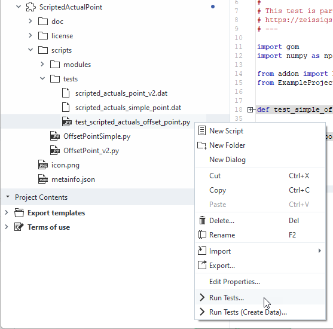
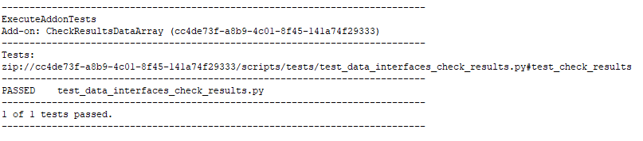
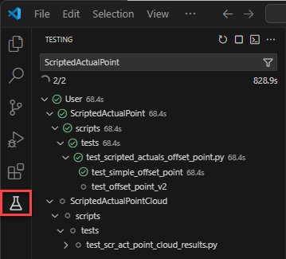
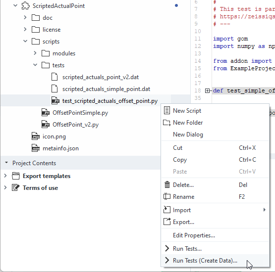
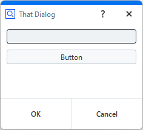
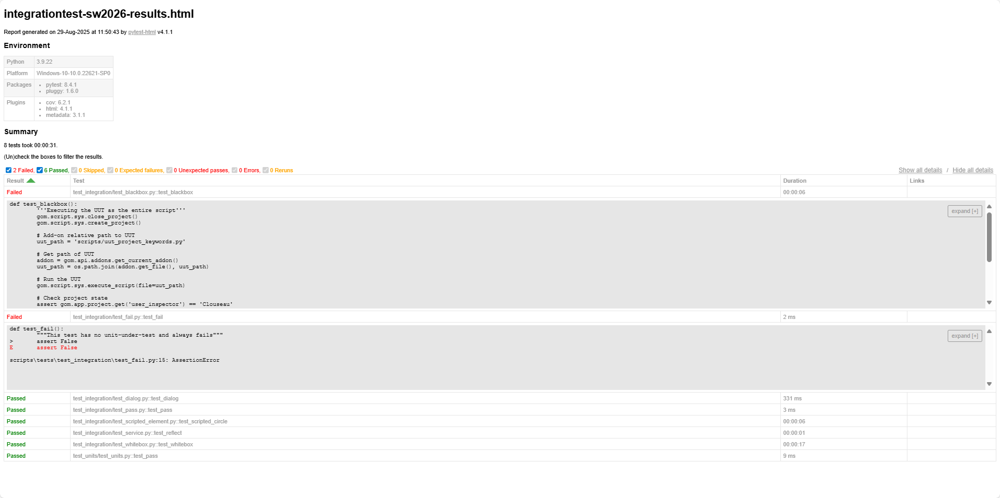
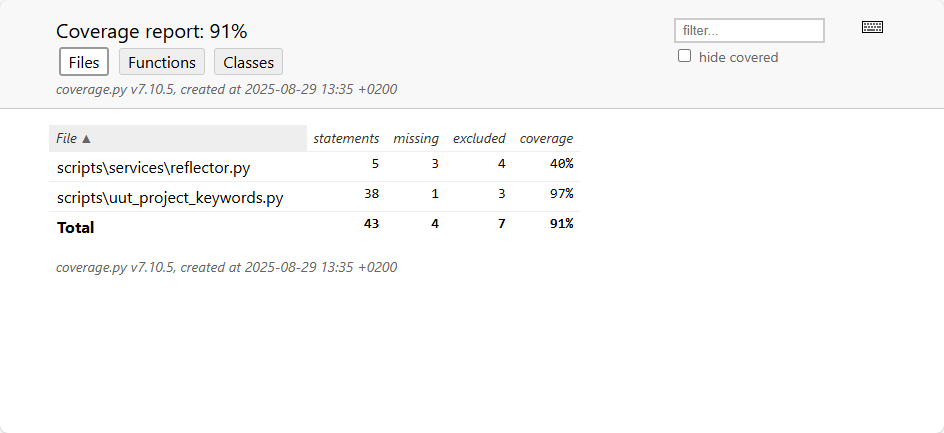
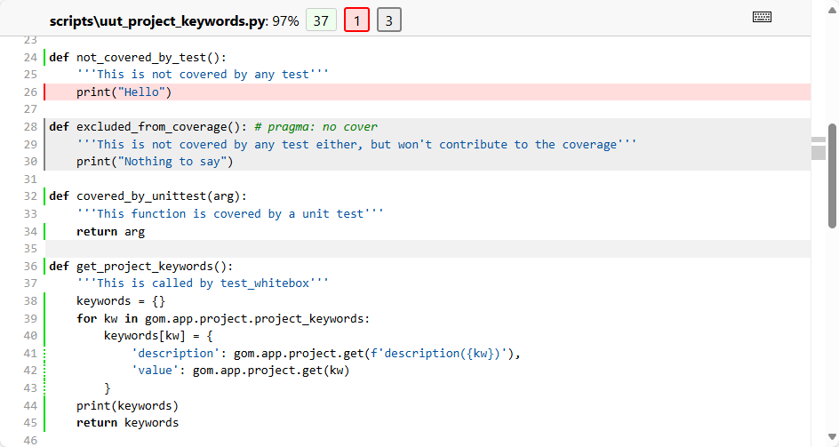

Testing Apps
Note
You can use the CheckResultsDataArray App as an example for adding tests to your App.
Why testing?
Testing your App is a crucial step for maintainability, especially when dealing with multiple software versions or updates. As manually testing your App is often tedious and time consuming, this how-to focuses on how to include automated tests in your App.
Automated tests are important when writing Apps in Python because they help to ensure the code is running correctly and efficiently. Furthermore, they can be used to ensure that the code is compatible with different versions of the ZEISS INSPECT Software, as well as on different machines. Finally, automated tests can be used to improve the overall performance of the App, as well as to ensure it meets the user’s requirements.
File structure
For test discovery to work, the file and folder structure of App tests needs to adhere to the following conventions, which are similar to pytest’s Conventions for Python test discovery.
Test script file names start with
test_Test scripts only contain functions with the prefix
test_.This means: no code outside of function definitions.
(optional, but recommended) All python test scripts reside in a separate
tests/directory of your App’s top-level directory.
Exemplary file structure.
Note
Starting with ZEISS INSPECT 2023, there is no need for a script at the top-level that executes all of your tests anymore. Instead, use the “Execute App tests” command (see Running tests).
Writing a test script
The following steps are required to write a new test script. The example code is taken from the CheckResultsDataArray App.
Create a test script: Create a Python file with the convention test_*.py. (Example: /tests/test_data_interfaces_check_results)
Import the module or package to be tested.
# Importing the example we want to test import check_results_data_array as example
For this to work properly, the code that you want to test needs to be structured in functions as well. In this case, the functions
get_single_result_value()of thecheck_results_data_arrrayscript is imported. For more details, see also: How the examples are structured.Write test functions: Write test functions named with prefix
test_that define expected behavior. For simple checks for expected values, use theassertstatement like shown below. For more complex test data (like arrays or Element properties), see Working with test data.def test_check_results(): # Setup test project open_project('zeiss_part_test_project') test_element = gom.app.project.inspection['Surface comparison 1'] # Test definition expected_single_value = -0.1673445701599121 assert expected_single_value == example.get_single_result_value(test_element) actual_result_array = example.get_result_values_array(test_element) test = ArrayDataTest('test_data/data_interfaces_check_results.dat') test.testArrayValues(actual_result_array)
That’s all it takes to create a simple test, which can now be run.
Running App tests
To run App tests – either a single one or multiple/all tests of an App – you can use the integrated App Explorer or VSCode. You can also execute tests from a script.
Using the App Explorer
To run the tests of a specific test script, use the context menu and select “Run tests…”.

You can use this context also on higher levels of the file hierarchy, e.g. to execute all tests in a folder or of the complete App.
Results will be shown in the log of the script editor.

Using VSCode
The ZEISS INSPECT App extension for VSCode was also extended to be able to run the test functions separately, or a collection of tests. To use this feature, navigate to the “Testing” workspace of VSCode and select the test items you want to run.

From scripts
You can use the execute_addon_tests command to run tests of an App. It takes the App UUID as mandatory argument. If solely given, all tests of the App are executed. You can also provide a list of test paths with the argument test_paths in form of relative paths inside the App. The suffix #test_<...> selects the test function to be run.
results = gom.script.sys.execute_addon_tests_draft(addon_uuid='cc4de73f-a8b9-4c01-8f45-141a74f29333')
results = gom.script.sys.execute_addon_tests_draft(addon_uuid='5f396cc9-7865-44a1-8a85-ed7c1689dd68',
test_paths=['/PythonApiExamples/tests/test_dialog_widgets_explorer_selection#test_explorer_selection'])
This will give you results as a list of tuples (test name, success, error message), which you can use for further evaluation.
Working with test data
In the namespace addon, there are two classes: addon.ArrayDataTest and addon.ElementTest.
These classes can help you to create test data and compare the data of the current test run with the saved reference data. An example usage is given in test_data_interfaces_volume_section.py of the VolumeSectionImageData App.
from addon import ArrayDataTest, ElementTest
from ExampleProjects.setup_project import open_project
# Importing the example we want to test
import import volume_section_image_data as example as example
def test_volume_section():
# Setup test project
open_project('volume_test_project')
test_element = gom.app.project.actual_elements['Plane X +40.00 mm']
#
# TEST
#
element_test = ElementTest('test_data/data_interfaces_volume_section_tokens.dat')
element_test.testElementValues(test_element, ['image_width', 'image_height', 'image_type'])
element_test.callTest()
raw_array = example.get_image_data_raw(test_element)
raw_array_test = ArrayDataTest('test_data/data_interfaces_volume_section_raw.dat')
raw_array_test.testArrayValues(raw_array)
rgb_array = example.get_image_data_rgb(test_element)
rgb_array_test = ArrayDataTest('test_data/data_interfaces_volume_section_rgb.dat')
rgb_array_test.testArrayValues(rgb_array)
You can see, that ElementTest can be used to access element properties easily. ArrayDataTest is used for numpy array comparison.
The path where test data is stored is supplied in the constructors (e.g. ElementTest('test_data/data_interfaces_volume_section_tokens.dat')).
If a relative path is given – as in this example – a resource inside the App is created / compared with. You can also use absolute paths to a file on your disk, but this is not recommended since not everyone who installed your App will have access to this data.
These classes will create the test data for you, if you run the test execution via “Run tests (create data)…”.

In a “normal” test run, data will be compared to the stored resources.
Testing Apps with dialogs
Normally, you would have to test Apps (or parts of it) using User-defined dialogs manually, but the Python class AutoDialogContext allows automated testing.
Example

def code_that_contains_dialogs():
dialog=gom.script.sys.create_user_defined_dialog (file='dialog.gdlg')
def handler(widget):
if widget == 'initialize':
print('The dialog has been initialized.')
elif widget == dialog.button:
print('The dialog has been closed via the button')
gom.script.sys.close_user_defined_dialog(dialog=dialog, result='buttonresult')
elif widget == dialog.input:
print(f'The text field has been changed to contain {dialog.input.value}')
dialog.handler = handler
try:
result = gom.script.sys.show_user_defined_dialog(dialog=dialog)
print(f'The result of the dialog is:\n{result}')
except gom.BreakError:
print('The dialog was canceled')
code_that_contains_dialogs()
For automated testing, we provide a callback function for each test case covering this dialog. We can set input values, trigger the dialog handler with a specified event and emulate the dialog’s control widgets (i.e. ‘Ok’ or ‘Cancel’ button). Note that each callback function evaluates the dialog.title. This allows to set up a function which can handle multiple dialogs.
def callback1(dialog):
if 'That Dialog' in dialog.title:
dialog.input.value = 'autotext1'
dialog.handler(dialog.button)
def callback2(dialog):
if 'That Dialog' in dialog.title:
dialog.input.value = 'autotext2'
return 'close'
def callback3(dialog):
if 'That Dialog' in dialog.title:
dialog.input.value = 'autotext3'
return 'cancel'
Finally we use AutoDialogContext to run our unit-under-test — the function code_that_contains_dialogs() — while applying our callback functions.
from gom_test_helpers.dialogs.AutoDialogContext import AutoDialogContext
print('Automatically executing the dialog with callback1')
with AutoDialogContext(callback1):
code_that_contains_dialogs()
print('')
print('Automatically executing the dialog with callback2')
with AutoDialogContext(callback2):
code_that_contains_dialogs()
print('')
print('Automatically executing the dialog with callback3')
with AutoDialogContext(callback3):
code_that_contains_dialogs()
Output:
Automatically executing the dialog with callback1
The dialog has been initialized.
The text field has been changed to contain autotext1
The dialog has been closed via the button
The result of the dialog is:
buttonresult
Automatically executing the dialog with callback2
The dialog has been initialized.
The text field has been changed to contain autotext2
The result of the dialog is:
gom.dialog.DialogResult ('button': False, 'input': 'autotext2')
Automatically executing the dialog with callback3
The dialog has been initialized.
The text field has been changed to contain autotext3
The dialog was canceled
Usage
AutoDialogContext provides a context for automatically interacting with dialogs which are shown via gom.script.sys.show_user_defined_dialog.
AutoDialogContext is a context manager (https://docs.python.org/3/reference/datamodel.html#context-managers),
which can be used together with the with statement (https://docs.python.org/3/reference/compound_stmts.html#with).
Its __init__ method expects a callback function. This callback function should take a dialog handle as the only parameter. The dialog handle may be used to manipulate the dialog (set the value of widgets, call the handler manually, etc).
Interaction with the control buttons of the dialog is done via the return value of the callback:
If the dialog shall be closed via the close button, the callback must return ‘close’.
If the dialog shall be closed via the cancel button (
BreakError), the callback must return ‘cancel’.If the dialog does not need to be closed by automatic control button interaction, but will close itself by some other interaction, the callback must return
None.
Running App tests with code coverage
Sometimes not only the test results, but also the percentage of code covered by the test suite is of interest. The App PytestTemplate provides a template for unit testing and integration testing with code coverage.
Both unit testing and integration testing is done with pytest and the coverage extension pytest-cov. The App must be in editing mode or located in a connected folder (see Using the App Editor) to allow access to its file structure.
The test folder structure is the same as described in File structure. The tests are executed with the test runners run_unittests.py or run_integrationtests.py, respectively.
The test runner
Configures the test setup
Sets up the pytest configuration
Uses pytest for test case discovery and test execution
Pytest generates a test report and a coverage report.
Testing services with code coverage
ZEISS INSPECT services are run in separate Python interpreter processes, therefore their code coverage cannot be measured with by the integration test runner using pytest-cov.
Instead, the Python decorator @coverage (see app_utils/service_coverage.py) can be applied to a service function. Additionally, "services-coverage": true must be added to the App’s metainfo.json file to enable service coverage. This way, a separate coverage data file (.coverage.<service>) is generated for each service Python file.
Using the Coverage.py command line tools, coverage data from regular Python modules and services can be combined (see Combining data files: coverage combine) and converted into a report (e.g. in HTML format, see HTML reporting: coverage html).
Example
Integration test results from the example in PytestTemplate
Testrunner logfile PytestTemplate\scripts\tests\log\pytest_sw2026.log
ZEISS INSPECT 2026 Testrunner Logfile, created 2025-08-29 11:50:12
Test case folder: C:\Users\<USERID>\Documents\work\zeiss-inspect-app-examples\AppExamples\misc\PytestTemplate\scripts\tests
sys.path=
[...]
reports_path='reports'
pytest_args=[...]
============================= test session starts =============================
platform win32 -- Python 3.9.22, pytest-8.4.1, pluggy-1.6.0 -- C:\Program Files\Zeiss\INSPECT\2026\python\python.exe
cachedir: .pytest_cache
metadata: {'Python': '3.9.22', 'Platform': 'Windows-10-10.0.22621-SP0', 'Packages': {'pytest': '8.4.1', 'pluggy': '1.6.0'}, 'Plugins': {'cov': '6.2.1', 'html': '4.1.1', 'metadata': '3.1.1'}}
rootdir: C:\Users\<USERID>\Documents\work\zeiss-inspect-app-examples\AppExamples\misc\PytestTemplate\scripts\tests
configfile: pytest_integrationtest_coverage.ini
plugins: cov-6.2.1, html-4.1.1, metadata-3.1.1
collecting ...
collected 8 items
scripts\tests\test_integration\test_blackbox.py::test_blackbox FAILED [ 12%]
scripts\tests\test_integration\test_dialog.py::test_dialog PASSED [ 25%]
scripts\tests\test_integration\test_fail.py::test_fail FAILED [ 37%]
scripts\tests\test_integration\test_pass.py::test_pass PASSED [ 50%]
scripts\tests\test_integration\test_scripted_element.py::test_scripted_circle PASSED [ 62%]
scripts\tests\test_integration\test_service.py::test_reflect PASSED [ 75%]
scripts\tests\test_integration\test_whitebox.py::test_whitebox PASSED [ 87%]
scripts\tests\test_units\test_units.py::test_pass PASSED [100%]
================================== FAILURES ===================================
________________________________ test_blackbox ________________________________
def test_blackbox():
'''Executing the UUT as the entire script'''
gom.script.sys.close_project()
gom.script.sys.create_project()
# Add-on relative path to UUT
uut_path = 'scripts/uut_project_keywords.py'
# Get path of UUT
addon = gom.api.addons.get_current_addon()
uut_path = os.path.join(addon.get_file(), uut_path)
# Run the UUT
gom.script.sys.execute_script(file=uut_path)
# Check project state
assert gom.app.project.get('user_inspector') == 'Clouseau'
> assert gom.app.project.get('user_project') == 'Test Projet' # intended to fail
E AssertionError: assert 'Test Project' == 'Test Projet'
E
E - Test Projet
E + Test Project
E ? +
scripts\tests\test_integration\test_blackbox.py:32: AssertionError
__________________________________ test_fail __________________________________
def test_fail():
"""This test has no unit-under-test and always fails"""
> assert False
E assert False
scripts\tests\test_integration\test_fail.py:15: AssertionError
- generated xml file: C:\Users\<USERID>\Documents\work\zeiss-inspect-app-examples\AppExamples\misc\PytestTemplate\scripts\tests\reports\junit\integrationtest-sw2026-results.xml -
=============================== tests coverage ================================
_______________ coverage: platform win32, python 3.9.22-final-0 _______________
Coverage HTML written to dir C:\Users\<USERID>\Documents\work\zeiss-inspect-app-examples\AppExamples\misc\PytestTemplate\scripts\tests\reports\cov\integrationtest-sw2026-coverage
Coverage XML written to file C:\Users\<USERID>\Documents\work\zeiss-inspect-app-examples\AppExamples\misc\PytestTemplate\scripts\tests\reports\cov\integrationtest-sw2026-coverage.xml
============================== slowest durations ==============================
16.52s call test_integration/test_whitebox.py::test_whitebox
6.33s call test_integration/test_blackbox.py::test_blackbox
6.27s call test_integration/test_scripted_element.py::test_scripted_circle
1.09s call test_integration/test_service.py::test_reflect
0.33s call test_integration/test_dialog.py::test_dialog
0.00s setup test_units/test_units.py::test_pass
0.00s setup test_integration/test_blackbox.py::test_blackbox
0.00s teardown test_integration/test_blackbox.py::test_blackbox
0.00s teardown test_integration/test_whitebox.py::test_whitebox
0.00s call test_units/test_units.py::test_pass
0.00s teardown test_units/test_units.py::test_pass
0.00s teardown test_integration/test_service.py::test_reflect
0.00s setup test_integration/test_dialog.py::test_dialog
0.00s teardown test_integration/test_pass.py::test_pass
0.00s setup test_integration/test_whitebox.py::test_whitebox
0.00s teardown test_integration/test_scripted_element.py::test_scripted_circle
0.00s setup test_integration/test_fail.py::test_fail
0.00s teardown test_integration/test_dialog.py::test_dialog
0.00s setup test_integration/test_service.py::test_reflect
0.00s call test_integration/test_pass.py::test_pass
0.00s call test_integration/test_fail.py::test_fail
0.00s setup test_integration/test_scripted_element.py::test_scripted_circle
0.00s teardown test_integration/test_fail.py::test_fail
0.00s setup test_integration/test_pass.py::test_pass
- Generated html report: file:///C:/Users/<USERID>/Documents/work/zeiss-inspect-app-examples/AppExamples/misc/PytestTemplate/scripts/tests/reports/html/integrationtest-sw2026-results.html -
=========================== short test summary info ===========================
FAILED scripts\tests\test_integration\test_blackbox.py::test_blackbox - AssertionError: assert 'Test Project' == 'Test Projet'
- Test Projet
+ Test Project
? +
FAILED scripts\tests\test_integration\test_fail.py::test_fail - assert False
======================== 2 failed, 6 passed in 30.70s =========================
Test Report: file://C:\Users\<USERID>\Documents\work\zeiss-inspect-app-examples\AppExamples\misc\PytestTemplate\scripts\tests\reports\html\integrationtest-sw2026-results.html
Coverage Report: file://C:\Users\<USERID>\Documents\work\zeiss-inspect-app-examples\AppExamples\misc\PytestTemplate\scripts\tests\reports\cov/integrationtest-coverage/index.html
HTML test report PytestTemplate\scripts\tests\reports\html\integrationtest-sw2025-results.html

HTML coverage report PytestTemplate\scripts\tests\reports\cov\html_combined\index.html
Note
The combined coverage report includes the coverage data for regular Python scripts (generated by pytest) and additional coverage data of ZEISS INSPECT services.

Clicking a Python module shows a detailed report with code lines marked as run (green), missing (red) or excluded (gray). A code section (single line or begin of block) can be excluded from the coverage report with # pragma: no cover.
